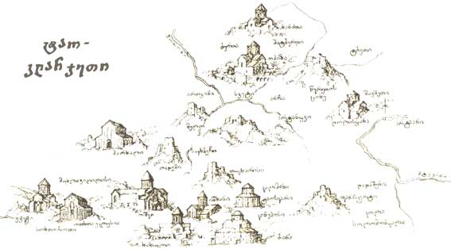

ბაგრატიონთა საგვარეულო
ტაო-კლარჯეთში ჩამოყალიბდა ბაგრატიონთა დინასტია, რომელმაც მოგვიანებით გააერთიანა საქართველო. რეგიონი მნიშვნელოვანი პოლიტიკური საყრდენი იყო.
⛪ შენ ისე ღრმა ხარ, ქართულო ცაო, შენ ისე ღრმა ხარ... სამკვიდრო შენს ქვეშ მტრად შემოსულმა ვერავინ ნახა: ვერცა ოსმალომ, ვერცა მონღოლმა და ვერცა სპარსმა... შენი დიდების მომღერალია ოშკი და ზარზმა, ბებერი ტაო... შენ ისე ღრმა ხარ, ისე ფაქიზი, ქართულო ცაო...
ტაო-კლარჯეთი (თურქ. Tao-Klarceti) — ისტორიული მხარე სამხრეთ-აღმოსავლეთ თურქეთში, რომელიც მოიცავს არტვინის, არტვინისა და ერზრუმის პროვინციების ნაწილს. ტაო-კლარჯეთი იყო საქართველოს ისტორიული მხარე, რომელიც მნიშვნელოვანი როლს თამაშობდა საქართველოს ისტორიაში შუა საუკუნეებში. ტაო-კლარჯეთი იყო ერთ-ერთი მთავარი კულტურული და სულიერი ცენტრი საქართველოში, სადაც მდებარეობდა მრავალი ცნობილი მონასტერი და ეკლესია. ტაო-კლარჯეთის ტერიტორიაზე მდებარეობს მრავალი ისტორიული ძეგლი, რომლებიც დღესაც ინახება და წარმოადგენს მნიშვნელოვან კულტურულ მემკვიდრეობას. ტაო-კლარჯეთის ისტორია დაკავშირებულია საქართველოს ისტორიასთან და მისი ტერიტორია ხშირად იყო ომებისა და დაპირისპირებების ეპიცენტრი.

ტაო-კლარჯეთში ჩამოყალიბდა ბაგრატიონთა დინასტია, რომელმაც მოგვიანებით გააერთიანა საქართველო. რეგიონი მნიშვნელოვანი პოლიტიკური საყრდენი იყო.
გრიგოლ ხანძთელის მოღვაწეობამ ტაო-კლარჯეთი სულიერ ცენტრად აქცია. აშენდა მონასტრები, რომლებიც განათლებისა და კულტურის კერებად იქცა.
ოშკი, იშხანი, ხახული და ბანა ქართული არქიტექტურის შედევრებია, რომლებიც დღემდე აოცებს მკვლევრებს.